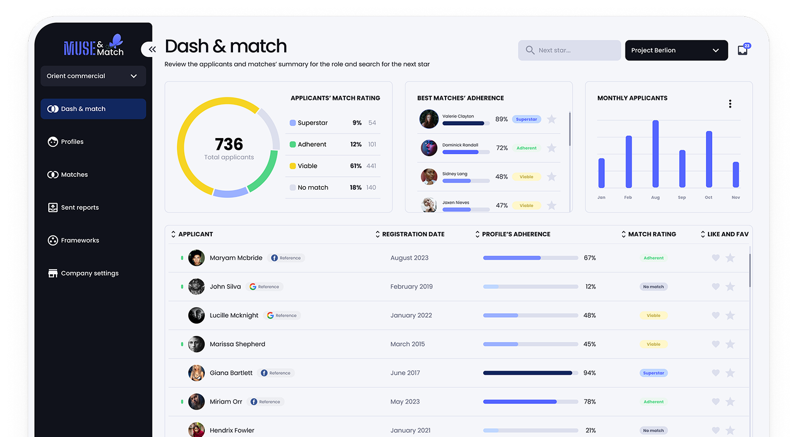
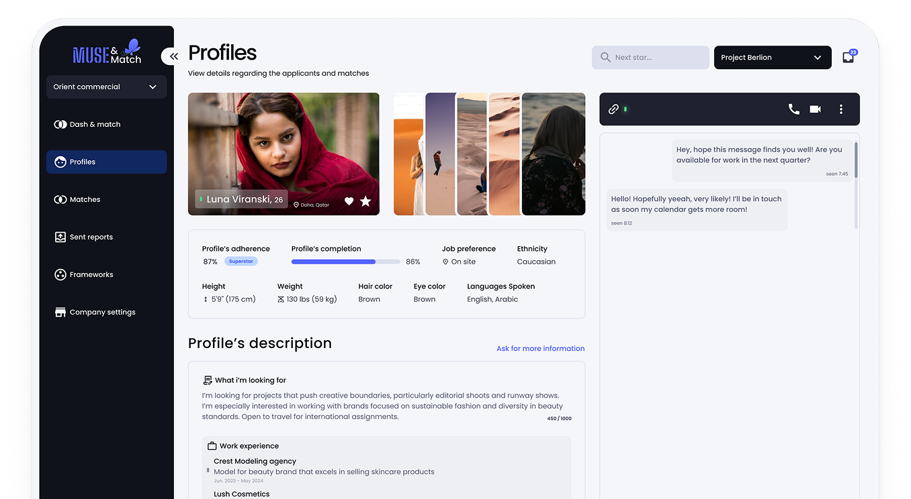
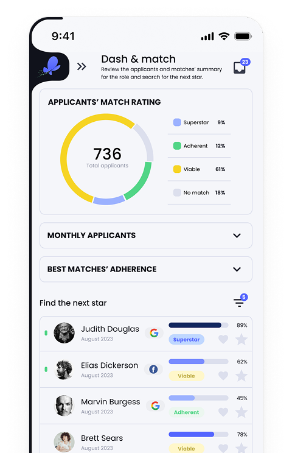
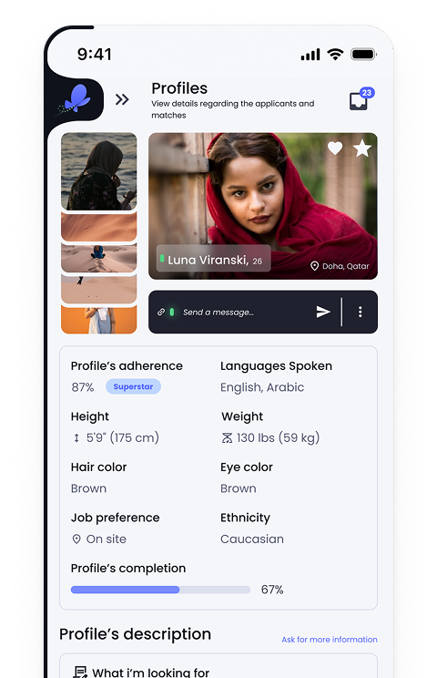
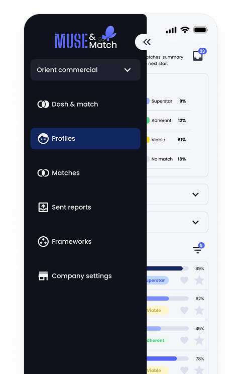

"A fashion agency has trouble finding models for its clients. Despite posting projects on social media, they can't find exactly the people they would like. Furthermore, they end up wasting a lot of time with the entire process."
With this scenario in sight, ‘Harpio HR’ company wanted to explore possible outcomes and pathways with a digital platform in order to solve this problem, bearing in mind two priorities: to solve the problem quickly and accurately. The idea is that the agency would be able to receive profiles and match models for each client within this product.

Role
UX/Product Designer
Duration
5 days
Team
Just me
Problem
Within a strict timeframe (only 5 days), I needed to present the client with an answer, passing on ideas and exploring solutions just so they could iterate on and start to work on an eventual MVP.
Some steps were needed in order to achieve the desired objective:
- Map out the user journey (the agency perspective), establishing the main dynamics within the product to solve the presented problem.
- Understand the agency needs regarding this journey.
- After this research, conceive the branding and style that would resonate with the client's vision.
- Create a UI (responsive web and mobile) that follows the brand's identity while being aware of best practices, laws of UX and UI, heuristics, cognitive load, WCAG, etc.
- Create a presentation to display the proposed value and results.
Solution
The results followed the client's principles: Simple, direct, modern, reliable, transparent. A product for an agency that values practicality and clarity.
35+
Components
2
Personas mapped



